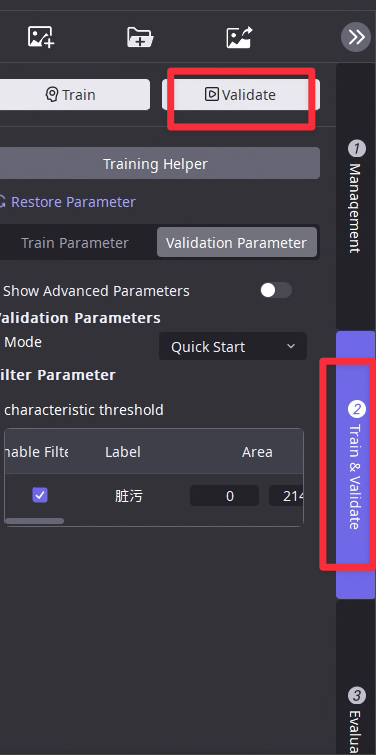
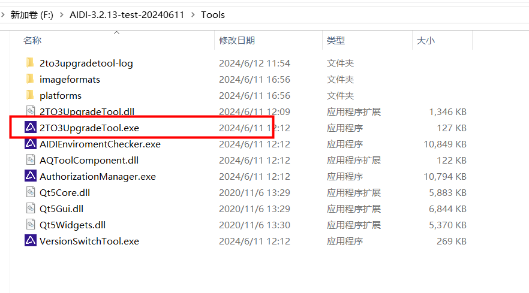

Software Introduction
Functional layout
Terminological concepts
● Workspace:
It is the storage location for newly created AI projects. Generally, the projects at a project site are saved within one workspace, which facilitates project management and maintenance by on - site personnel.
● Project:
Usually, for the images under an optical solution, one project is established. Then, one or more AI modules are created within the project to achieve defect annotation and model training.
● Dataset:
○ Training set: After defect annotation is completed, the images are added to the training set. These are the data used for training the model to learn defect features.
○ Test set: The images with completed defect annotation that are not added to the training set. After the model is trained, these images are used to evaluate the model's recognition effect on other defect features.
○ Unmarked: Can be used for manual model evaluation
● View:
View: A rectangular box (ROI) based on the original image, with the image inside the box referred to as the view
View transformation: The transformation settings of the view box
View Mask: Draw interference areas, which will be blacked out and will not participate in training
View filtering: By filtering settings, retain the desired views
● OK and NG diagrams:
○ OK image: Good product image
○ NG diagram: defect diagram
● Unannotated Images:
Images imported into the software but not manually annotated. They can be used as data to test the model's performance after the model is trained. However, due to the lack of annotation information on these images, it is impossible to count the defect over - detection and missed - detection information on such images in the software's evaluation page. It is necessary to manually check the recognition effect of the model on each of these images one by one.
● Annotated Images:
Images imported into the software, and the defect annotation tool of the AI module is used to mark the defects on the images. These are the data used for training and evaluating the model.
● Indicators:
○ Missing detection rate=Number of Un-detected NG / Total Number of NG
○ Over-Detection Rate = Number of OK Marked as NG / Total Number of OK
○ Inspection rate = Number of OK judged as NG/Total number of OK
○ Accuracy = Number of Correct Classifications / Total Number
○ Recall = Number of NG Marked as NG by the Model / (Number of NG Marked as NG by the Model + Number of NG Marked as OK by the Model). The higher the recall, the fewer missed-detected areas there are in the image.
○ Precision = Number of NG Marked as NG by the Model / (Number of NG Marked as NG by the Model + Number of OK Marked as NG by the Model). The higher the precision, the fewer over-detected areas there are in the image.
● Confusion matrix:
Confusion matrix is a commonly used model evaluation tool, with manual annotation vertically and inference results horizontally. The confusion matrix can intuitively understand which class of samples the model performs poorly in and which other classes are easily confused with.
● Tag：
Image Tag: used to identify images and can identify their attributes (batch, collection time, type of defect, etc.);
View Tag: The tag of a view that can identify the features of the view
● Basic operations:
Annotation: Draw defect areas in the image.
Label: Category of defect.
Do not learn regions/masks:regions that the model does not want to focus on.
Key learning areas: The areas that the model is expected to focus on.
● TP:
True Positive refers to the number of positive-class samples that are correctly predicted as positive - class. In the software, it can be understood as "the number of NG cases that are correctly identified as NG by the model".
● FP:
False Positive refers to the number of negative-class samples that are incorrectly predicted as positive - class. In the software, it can be understood as "the number of OK cases that are wrongly identified as NG by the model".
● FN:
False Negative refers to the number of positive-class samples that are actually positive but are incorrectly predicted as negative - class.<br> In the software, it can be understood as "the number of NG cases that are wrongly identified as OK by the model".
Engineering management
(1) Entrance
(2) Create a workspace
Users can choose to load local directories or create new sub workspaces under existing workspaces
(3) Create Project

Select the desired project type and enter the project name

(4) Operations supported by the workspace
Renaming the workspace
Save workspace as
New construction project
Engineering List
Open all projects
View workspace information
Delete workspace
(5) Engineering supported operations

Thumbnails
Project renaming
Engineering Information
Annotation information editing
Delete project
Open the project
Engineering management Sample Case
create the project based on camera positon
Image operation
Import Image
(1) Import on an image basis
(2) Import by folder
Data export
If exporting the image of the algorithm module,
the steps for exporting are as follows:
1.First, select the corresponding image in the image list
2.Click the export button in the IO area of the current module image or right-click on the image list and select “Export Selected Images/Annotations”
3.Choose to export the original image/annotations, or choose to export the rendered image
4.If you choose to export the original image/annotations,
you can check the options in the original image and annotations (you can freely choose to export only annotations/original image or export all)
5.Select the desired export path and click OK to complete the data export
6.Under the specified path, you can see the data package file stored this time
Data import

1.Click on the upper right corner of the main interface to import images
2.Select the 3.0 exported data package file

3.Enter the packet panel
4.Further data filtering can be performed based on image tags.
The connection conditions between tag filters are and, with a maximum of 3 added
5.The original image and annotations can be checked, and the image can be checked
6.Click OK to proceed
In addition, if the current module already has an image, importing the data package can only select annotations corresponding to the existing image, which can achieve automatic matching
Annotations between different modules support each other
Annotations for segmentation and detection support each other
Annotations for segmentation and unsupervised segmentation support each other
OCR and detection annotations support each other
The labeling of detection and positioning (assembly inspection) supports each other
Compatible with old version annotations
Compatibility instructions
Annotations for versions 2.3 and 2.4 can be imported and used in version 3.2 (compatible with aqlabel files)
Operation steps
2.X first module annotation import 3.0:
(1) Data to be prepared:
2. X first module source folder and label folder, and these two folders need to be placed in the same level directory
(2) 3.0 New Construction Projects
(3) Add the corresponding first module after the input node
(4) Click on “Add Image” in the first module, select the image from the source, and click “Add”
(5) Go to the view converter of the current module and click Apply. You can see the reserved annotations now
Third party annotation import
Splitting module:
● Support Labelme: JSON format annotation files
Detection module:
● Support Labelme: JSON format annotation files
● Support Labelimage: XML, JSON format annotation files
Image list function
(1) Right click function:

Add tools
(1) Click the add button

(2) Enter the Add Module interface

Click to add the corresponding module
Click on the module to view the introduction information
(3) Parallel modules
Continue to add other tools behind the module to complete module parallel connection

(4) Series module
Continue to add modules after the modules to complete module concatenation
Data annotation
Brush tools
Polygon drawing tools
The polygon drawing tools are:
circular pen, square pen, circular line pen, square line pen, pen, pencil, two-point circle drawing tool, magic wand tool, and quick annotation tool.
(1) Circular and square pens:
Circular brush tools with a diameter of the brush size.
A square brush tool with a side length equal to the size of the brush.
The A key on the keyboard increases the brush size, while the D key reduces the brush size.

(2) Circular Line Pen and Square Line Pen:
Circular Line Pen tool.
After setting the starting point with the left mouse button, you can continuously left click to draw multiple straight line annotations. Double click the left mouse button to end the annotation.
The diameter is the size of the brush.
The square line pen has a square shape.
After setting the starting point with the left mouse button, you can continuously click to draw multiple straight line annotations. Double click the left mouse button to end the annotation.
The line width is the size of the brush.

(3) After filling with a pen and setting the starting point with the left mouse button, click continuously with the left mouse button to draw multiple line segment contours.
Double click the left mouse button to close the contour, and the area enclosed by the contour will be automatically filled with annotations, which is not affected by the size of the brush. When using, avoid crossing the contour line segments.
Pencil filling:
Press and hold the left mouse button to draw the outline of the annotation.
Release the left mouse button to automatically fill it as the annotation, which is not affected by the size of the brush.
When using it, avoid crossing the outline line segments.
(4) Draw a circle at two points:
After setting the starting point with the left mouse button, drag the mouse to draw a circle, double-click the left mouse button to close the contour, and the area enclosed by the contour is automatically filled with annotations, which is not affected by the size of the brush.

(5) Magic Wand:
For some images with clear boundaries, the Magic Wand tool can quickly extract the images.
The function of the Magic Wand is to know the color of the position you clicked on, and automatically obtain the same color in nearby areas, making them in a selection state.
Not affected by brush size.
And you can set the effective range (ROI) of the magic wand.
In addition, you can also choose whether to fill the holes and voids when using the magic wand tool
(6) Quick annotation:
Select the area by adding a tool pen and deleting the tool pen deletion area.
When adding a tool pen to enclose the area, the area is selected.
When deleting the tool pen, annotate the selected area. If the area is not enclosed by the deleted pen, it is no longer selected.
After completing the drawing, click Apply to complete the annotation.
Not affected by brush size.
* When there is a certain contrast between the defect boundary and the product background, it is recommended to use other tools.
* For slender defects with less than 3 pixels, it is recommended to use other tools.

(7) Intelligent Annotation:
For defects with clear object boundaries and high contrast, intelligent annotation can quickly identify and outline the contours of these defects, effectively improving the annotation efficiency. When using it for the first time, a loading pop-up window will appear, indicating that it takes about 4 to 5 minutes to perform the initialization (the specific time consumption may vary depending on the computing power of the graphics card). First, use the selection pen to annotate the target area, and then use the deletion pen to remove the redundant target area.
(8) Eraser:
The diameter of the circular eraser is the size of a brush and is used to erase annotations.
A square eraser with a brush size edge is used to erase annotations.
The linear eraser pen is circular in shape. After setting the starting point with the left mouse button, you can continuously click to draw multiple straight line annotations. Double click the left mouse button to end the annotation.
The line width is the size of the brush and is used to erase the annotation.
*Erasers can choose the shape of the eraser and the type of defect to be erased.
(9) Brush size:
Display the brush size in pixels.
The keyboard “A” key enlarges the brush, and the “D” key reduces the brush.
(10) Reverse selection:
Click reverse selection to convert the original defect annotation area to the area without defect annotation.
(11) Mark corrosion expansion:
① Select the annotation category you want to perform corrosion expansion on
② Fill in the specific pixel values for expansion or corrosion, click OK to proceed
Rectangle drawing tool
[Application scenario: Detection tool]
Free box:
After clicking, draw any rectangular box label diagonally.
After popping up the label box, select the label name and complete the annotation.Standard box:
Click to directly place a fixed size rectangular box annotation, which can adjust the width and height of the rectangular box.
After popping up the label box, select the label name and complete the annotation.
*It is recommended to use standard mode for annotation when the target size is fixed
Single point drawing tool
[Application scenario: Positioning tool]
Precise point positioning tool:
Precise annotation of location feature points with category labels is required in the image.
*The annotation points have been changed from circles to squares, expanding their usage scenarios.
In addition, square annotations are also applicable to circular targets and can be detected normally.
*When using single point positioning, it is recommended to use copy (ctrl+C) and paste (ctrl+V) for quick annotation.Quick annotation tool:
(1) First, draw a line segment parallel to the height or width of the target

(2) Then hold down the left mouse button to draw

Attribute system
(1) Set unique color attributes for annotation and inference results, and cannot set the same color attribute repeatedly.
Colors that have already been selected cannot be selected again.
(2) Set the color properties for the drawing process.
Annotation mode
Defect annotation mode
Defect labeling:
used to identify defect features or extract product locations
In this mode, regions within the image view can be annotated

Key learning area drawing mode
[Only the segmentation tool has this function]
Key learning areas:
areas that the model hopes to focus on
In this mode, it is possible to draw key learning areas within the image view
Not learning region drawing mode
Not learning regions:
regions that the model does not want to focus on
In this mode, it is possible to draw non learning regions within the image view
Label management
1.add label here
2.label list
3.delete label
Annotation filtering
set filter here
click after setting
clear filter
set the filter as the tag results

The filtering items include:
category, category attributes, set, position, width, height, angle, area, etc
The annotation filtering result corresponds to the canvas:
Clicking on a row can directly jump to the corresponding annotation of the image

Annotation distribution

You can select the type of distribution you want to view
You can select the labeling, test results, all
When the distribution type being viewed is category:
Two filters
Y axis show the count
specific images info
X axis show the defect category
The current statistics are based on the range of images, which can be adjusted in the main list
When the distribution type being viewed is location:
1.Filters can be specified
2.Coordinate information is displayed on mouse hover
3.Click to add a real image as a background to visualize the distribution of coordinate points.
When viewing distribution types such as width/height/angle:
Value of the corresponding statistical range segment
Tag management
Tag types:
Image Tag, View Tag
Image Tag:
used to identify images and can identify their attributes (batch, collection time, type of defect, etc.);
View Tag:
The tag of a view that can identify the features of the view
Set Tag
Entrance:
Right click on the image list and use shortcut keys to directly set tags for images

After clicking, the Tag window for the setting module will appear, allowing you to perform tag operations on the selected images in a centralized manner

Click the delete button in the Tag icon in the image information to quickly delete the corresponding view tag or image tag of the current image
View operations
What is view conversion?
It is used to select the effective image range of the current module according to the detection results of the previous module.
The image area within this range is the view
View filtering
entrance:

By default, all NG categories are retained in the view.
Users can manually choose to retain defects of the specified category as the view source, or choose OK images as the view source
Select to keep the view,
uncheck to not keep the view
View transformation
(1) Can draw new views

(2) You can modify the size, position, angle, and corrosion expansion of the generated view.
Recommend manually dragging the view box for quick editing
(3) Existing views can be deleted
(4) Views can be divided and merged
Can define the number of horizontal and vertical partitions as well as the partition interval, click on the partition to take effect, support recall and redo
Hold down the keyboard “ctrl” and click in sequence to select multiple views.
Right click and select merge to perform the view merge operation
Other:
Parameter initialization
Recall and redo

Current view transformation identifier

View Mask
(1) Automatic generation:
after clicking, the detection result of the previous module will be automatically used as the mask.
Also supports reverse selection, which can use areas other than the detection area as masks

(2) Manual drawing:
supports manual framing of new view areas
View Conversion - Image List Filter
Supported filtering items:
Search by image name
Search by Image Tag
Add training set
Automatic partitioning (model training assistant)
entrance:
Model Training Assistant Main Interface:
It is divided into two functional sections:
data partitioning and training set recommendation.
Data partitioning
Proportional partitioning:
All annotated data is divided into training and testing sets according to the specified ratio
Quantity division:
All annotated data is divided into training and testing sets according to the specified quantity
Training set recommendation
Automatically select training recommended data based on existing basic models.
It is recommended to train the basic model with a training set/complete set>=5%, covering various types of defects.
Selection ratio=selection quantity/complete set, recommended to take 5%
Note:
As long as the current model changes (switching models, retraining, etc.), all training recommendation sets will be cleared
Manual division
Right click on the image in the image list to add/remove the training set.
Support multiple selections.
Training
Training Parameter

Execute training

Inference
Inference Parameter
Execute inference

Evaluation results
entrance:
Comprehensive indicators

Training set accuracy: TP/(TP+FP) in the training set
Training set recall rate: TP/(TP+FN) in the training set
Test set accuracy: TP/(TP+FP) in the test set
Test set recall rate: TP/(TP+FN) in the test set
Accuracy:
The higher the accuracy, the fewer regional level passes;
Accuracy is relative to the predicted result, which represents how much of the positive predicted samples (defect samples) are correct.
Therefore, accuracy is: P=TP/(TP+FP)
Recall rate:
The higher the recall rate, the fewer missed detections at the regional level;
The recall rate is relative to the sample, that is, how many positive samples (defective samples) are predicted correctly in the sample, such as TP.
All positive samples have two directions, one is judged positive and the other is misjudged negative, so there are a total of TP+FN.
Therefore, the recall rate R=TP/(TP+FN)
Correct prediction:
The proportion of correctly predicted images at the image level to all evaluated images can be redirected to the corresponding image range by clicking the mouse.
Error prediction:
The proportion of image level error prediction images to all participating images in the evaluation can be redirected to the corresponding image range by clicking the mouse.
Total number of missed defects:
The number of missed defects (at the regional level), which can be clicked with the mouse to jump to the corresponding image range.
Total number of inspected defects:
The number of inspected defects (at the regional level), which can be clicked with the mouse to jump to the corresponding image range.
Confusion matrix
Confusion matrix is a commonly used model evaluation tool, with manual annotation vertically and inference results horizontally.
The confusion matrix can intuitively understand which class of samples the model performs poorly in and which other classes are easily confused with.
Usage rules:
(1) First, filter the dataset range:
All: The confusion matrix for all images.
Name retrieval:
Only display the confusion matrix of the filtered image based on the image storage name.
View Tag Retrieval:
Only display the confusion matrix of images filtered based on view tags.
Image Tag Retrieval:
Only display the confusion matrix of the filtered image based on the image tag
Training set:
Only display the confusion matrix of the training set.
Test set:
Only display the confusion matrix of the test set.
(2) After selecting the dataset, you can choose whether to view the image level matrix or the region level matrix:
Image level is a qualitative result based on the entire image.
The regional level is a qualitative result based on the region of each image.

(3) Then you can choose whether to view the quantity matrix or the probability matrix
The quantity matrix is the result of statistics based on the number of items.
The probability matrix is the result of statistics conducted proportionally.
(4) After filtering to the desired result, you can click on any grid in the matrix, and the image list will automatically jump to the corresponding image according to the filtering rules.
It is possible to verify the results of each image in order to further optimize the model in a targeted manner.
Category Overview
Provided:
Number of missed defects (number of missed defects), number of passed defects (number of passed defects), accuracy (TP/(TP+FP)), recall (TP/(TP+FN)) for each defect category
Model details
Three sets of model time information are provided, namely total time, single graph testing time (average+maximum), and single iteration time (average+maximum)

Training Curve
During the training process, users can observe the loss curve to help observe the progress of the training process.
More
Detailed information of the model,
including recall, accuracy, number of annotations, recall, regional accuracy, and regional recall for the training and testing sets, respectively

Area accuracy:
The accuracy calculated in units of defect area
Regional recall rate:
The recall rate calculated in units of defect areas
Image filtering
Filter
Filter criteria support:


The filtering criteria support “and”, “or”, and “non connection”.
One click reset:
Click the reset button at the top of the list to quickly return to the initial state

Sort
Menu bar
Files
-New Project: Create a new project in the current workspace
-Recently opened projects: Recently opened projects
-Close Current Project: Close the current project on the main page
-Close All Projects: Close all currently open projects
-Delete Current Project: Delete the current project on the main page with caution
Version
-Save Current as Version:
Save the current status of the current project as version
-Fallback to the most recent version:
Fallback to the version that was previously saved in the current project
-Manage existing versions:
Manage all versions of the current project
Tools
-Factory Mode:
Enter the factory mode of the current project
-Comprehensive judgment tool:
Add a comprehensive judgment tool to the current project.
If a comprehensive judgment tool has already been established, it needs to be deleted first and then re created
-Export Report:
Edit the report for the current module of the current project and export the report

Image
-Import Image: The current project imports images in units of images
-Import folder: Import images in folders for the current project
Training & Inference
-Training current module:
Add the current module to the training/training queue in the current project
-Inference current module:
Adding inference to the current project module
-Training Task Management:
View/Manage Current Training Tasks
-One click inference for all images:
infer all images of the current project through a tree process
-One click reasoning for adding images:
Reasoning the current new image through a tree process
Model
-Model export:
Export the current engineering model
-Training process curve:
View the training process curve of the current module in the current project
-Model Time:
View the model time information of the current module in the current project
-Model Information:
View the detailed model information of the current module in the current project
Settings
-Preferences:
Open preference settings
-Hardware selection:
Select the maximum number of GPUs and GPU priority for engineering training and inference, respectively
-Management of Judgment Standard Functions:
Managing the Judgment Standard Functions of Comprehensive Judgment Nodes
-Engineering volume optimization:
cleaning temporary engineering files to achieve significant reduction in engineering volume
Window
-Ruler:
Turn ruler on/off
-Auxiliary lines:
turning on/off auxiliary lines
-Coordinate values:
enable/disable coordinate values
-Image information:
enable/disable image information display
-Display advanced parameters:
enable/disable advanced parameters
-Enable OK/NG display:
Turn on/off the display of results in the bottom left corner of the canvas
Help
-Using Documents
-Development documentation
-Example Engineering
-Graphics Card Widgets
-View logs
-Shortcut key information
-About AIDI
Version upgrade tool
Usage
Find the Tools folder in the AIDI installation directory
Find the 2To3 tool and double-click to open it 
Select the old 2.4 project and the storage path after conversion
The data scope of the retained old project includes the following content:
(1) Figure
(2) Annotation
(3) Dataset partitioning
(4) View Tag
Applicable module scope:
Quick inspection+segmentation
Split+Split
Each individual module (except for positioning and region extraction)